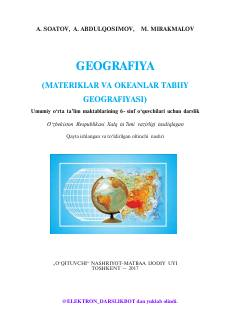

G66-sinf o'quvchilari uchun materiklar va okeanlar tabiiy geografiyasiga oid darslik.
Ushbu darslik umumiy o'rta ta'lim maktablarining 6-sinf o'quvchilari uchun mo'ljallangan bo'lib, materiklar va okeanlar tabiiy geografiyasini o'rganishga bag'ishlangan. Kitobda geografik qobiq, litosfera, gidrosfera va atmosfera kabi tushunchalar, shuningdek, dunyo okeanlari va materiklar tabiati haqida batafsil ma'lumotlar berilgan.